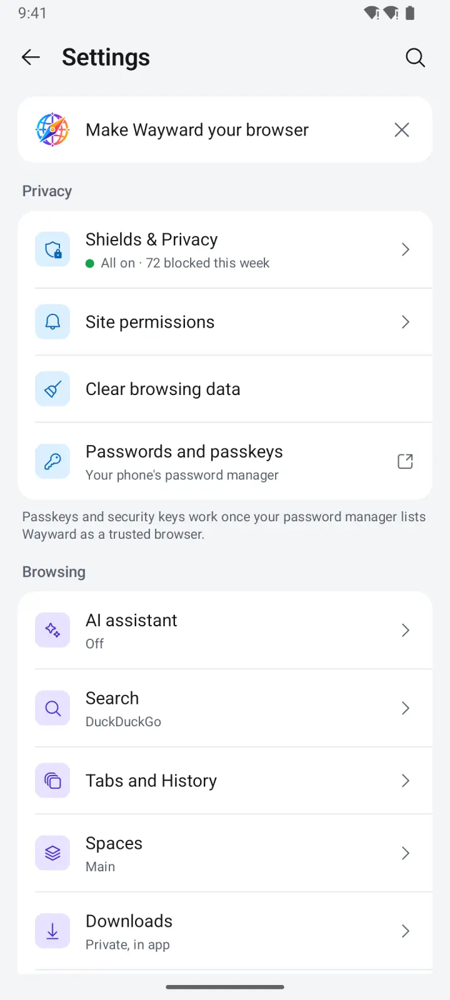
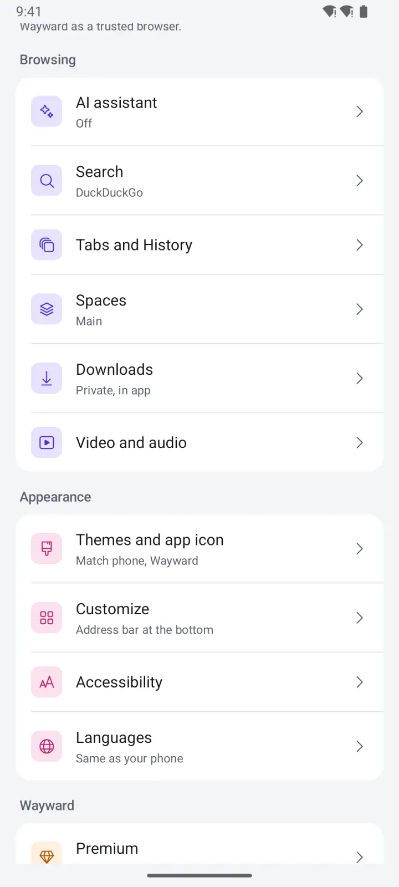
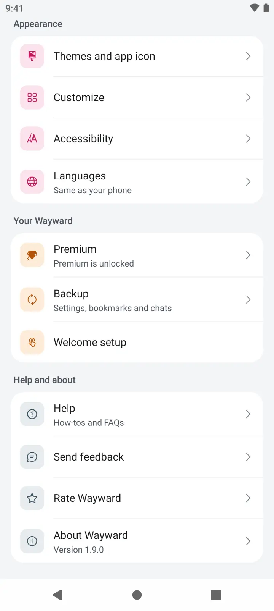
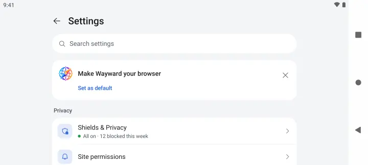

Every setting, screen by screen
Everything in Settings, in the order you'll find it, with what each choice does and how it starts out. To open Settings, tap the ⋮ menu, then Settings. It's also in the Tabs screen's menu.
Settings has six groups: Privacy, AI assistant, Browsing, Appearance, Your Wayward (Premium, Backup and Welcome setup) and Help and about (Help, Send feedback, Rate Wayward and About Wayward). Many rows show where they stand now under their name. A row with an arrow opens a screen inside Wayward; a row with a box-and-arrow mark opens your phone's own settings, outside Wayward; a row with neither asks first, in a small panel. On a wide screen (a tablet, an open foldable, landscape), Settings keeps a readable width in the middle.
To find a setting, tap Search settings under the title and type a word or two. Wayward looks through every Settings page, by a setting's name, the line under it and its page. The results say how many settings match, show the words you typed in bold, and each result says where it lives (for example Shields & Privacy > Connection, or Customize > Bars > Bottom bar). Tap one to go straight to it; its row lights up for a moment. The X clears what you typed, and Back (or the arrow at the top) closes the search.



At the top
Until Wayward is your default browser, a card under the search field says Make Wayward your browser. Tap Set as default on it to make Wayward your browser, or tap its X to put it away. See Make Wayward your default browser.
Privacy
Shields
The row says All on (with a green light) when every tracking protection that can be switched off is on, or Some off (with a red light), plus how many ads and trackers were blocked this week. If ad blocking itself isn't working, it says Ad blocking isn't working instead (see If ad blocking isn't working). It opens Shields & Privacy.
At the top, the week's count; tap it for the count day by day and the sites blocked most.
Blocking
- Ad blocking: Standard (by default) blocks ads, trackers, malware and cookie notices, and breaks the fewest sites. Strict adds a bigger malware list (URLhaus), phishing, link tracking, sites reaching into your home network, "open in app" banners and social widgets. Maximum adds pop-ups, chat, newsletter and notification prompts and other annoyances. Custom shows when you've picked your own mix of lists. The line under it says what the level you picked does.
- Filter lists: every uBlock Origin list, each with a switch, in sections: Ads, Privacy, Malware and phishing, Cookie notices, Social widgets, "Open in app" banners, Annoyances, Host lists and Regional. Each section says how many of its lists are on (like 7 of 9 on). A list downloads the first time you turn it on, and they update on their own.
- Block JavaScript on every site (off): many sites stop working without it. You can allow it again for one site from the shield in the address bar.
- Strict tracking protection (on): the browser engine's strict mode against trackers, cryptominers and social trackers.
- Block social trackers (on): share and like buttons that follow you from site to site.
- Block fingerprinting (on): changes what sites can read to recognize your device.
- Strip tracking from links (on): takes tracking tags, like the ones starting with utm_, out of addresses.
While uBlock Origin is still starting, the first rows show as Ads & trackers with Blocked by uBlock Origin. Loading its settings… for a few seconds.
Connection
- HTTPS-only (on): loads pages only over secure connections. A site without one shows a page with Open anyway (not secure), which opens just that site, in that tab. HTTPS-only is back on as soon as that tab goes to another site, you switch tabs, or you close it.
- Secure DNS: Quad9 (by default), Cloudflare, Mullvad, Custom (your provider's DNS-over-HTTPS address) or Off. It encrypts the lookups that turn site names into addresses, so your network can't log them, unless your network blocks it: then Wayward looks sites up the usual way so pages still load. It isn't a VPN.
- WebRTC: Hide local IP (the default), Default, Relay only or Off: what a site's video calls can learn about your network. Relay only also hides your own address, but some calls may not connect.
Privacy
- Cookies: Isolate cross-site (by default) keeps each site's cookies apart; Block all third-party blocks other sites' cookies altogether.
- Global Privacy Control (on): tells sites not to sell or share your data.
- Hide in recent apps (on): blanks Wayward's preview in your phone's app switcher. Before Android 13 it also blocks screenshots.
- Screenshots: Not in private tabs (by default), Allowed or Blocked. Blocking stops screen recording too, and a locked tab always blocks them while it's on screen.
- Links that open apps: Ask (by default) asks each time a page's link wants to open another app; Never keeps you in Wayward and opens the link's web page.
- Remove photo location and camera (on): pictures you download, copy or share and photos you upload lose where they were taken, the camera's make, model and serial numbers, and Facebook's photo ID. The picture, its orientation, colors and dates stay, and the photo on your phone is never changed. When Wayward can't take them out (a HEIC photo, for one), it asks before you share, copy or upload the picture, and a download says so.
Advanced
- Strict fingerprinting protection (off): Instead of your phone's own details, Wayward gives sites the common answers other browsers with it on give, though a few things, like the size of the page on your screen, still differ from phone to phone. Some sites break, times show in UTC, and sites see English and a light theme. It applies to pages you load after turning it on.
- JavaScript speed-ups (on): off makes sites slower and stops WebAssembly, in exchange for less that an attack could use. It fully takes effect after Wayward restarts.
- Skip AMP pages (on): opens a site's own page instead of a search engine's AMP copy of it.
- Ask sites for English (off): sites see English as the only language you read. It's on, and can't be turned off, while Strict fingerprinting protection is on.
A note at the end says what tabs keep, and that the AI assistant's and the video downloader's connections don't go through uBlock Origin, HTTPS-only or Secure DNS.
More: Choose how much Wayward blocks, Hide pop-ups and overlays on pages, Secure connections, Secure DNS and the other privacy settings, and See what was blocked, and let a broken site through.
Site permissions
The sites you've answered, under Notifications, Protected video, Location, Camera and Microphone, each with its answer (and which space, for a space with its own sign-ins). Forget makes a site ask again next time; it asks "Forget" and the site's name first, with Keep and Forget. A section with nothing remembered says No sites yet. Location, Camera and Microphone show the answers you asked Wayward to remember (For 24 hours or Always for this site), with Change and Forget. Answers for Only this time, and answers from private tabs, aren't listed. Site notifications only arrive while Wayward is running, and never from private tabs. More: Camera, notifications and other site permissions.
Clear browsing data
The row says History, cookies, cache and more. Tapping it opens a panel with a checkbox for each: Private tabs, Tabs, History, Cookies and site data, Cached images and files and Site permissions. Then Clear, and Wayward says Browsing data cleared. Bookmarks, start page shortcuts you added, saved tasks, downloads and settings are kept. The private start page's own shortcuts are kept too. If it would close locked tabs, it asks for your unlock first. The same dialog is in the menu (Clear data) and the Tabs screen's menu. More: Clear data, Shred a site, or delete everything.
Passwords and passkeys
Called Password manager on Android 13 and older. It opens your phone's own page for its password manager. Wayward fills in passwords and passkeys through your phone's password manager and never stores them itself. On Android 14 and later, a note says passkeys and security keys work once your password manager lists Wayward as a trusted browser. More: Sign in with your password manager.
Default browser
Shows once the card at the top is gone: Wayward is your phone's browser, or Choose Wayward in your phone's settings. It opens your phone's Default apps page.
AI assistant
The assistant has its own group, second after Privacy. The row says Part of Premium, Add your key, or, once it's set up, Off with a red light or On and your provider (like On · OpenRouter) with a green light.
Without Premium, the screen has The AI assistant is part of Wayward Premium (it opens Premium), your Saved tasks (to rename or delete them), and Open saved chat. If the assistant is off the bar, The assistant is hidden sits at the top; tap it to bring the assistant back.
With Premium, the setup comes first:
- AI assistant (off): turns the assistant on, after Turn on the AI assistant? explains what it shares. Under its name it says On or Off, with the same light. Ask from the address bar (off) offers to ask it about what you type in the address bar. A note under the card reminds you that when you use the assistant, what it reads and does goes to the AI provider and model you choose.
- Provider and key: AI provider is a dropdown of OpenRouter, Claude, OpenAI and Grok (Choose until you pick one), with a line saying what the one picked is. Then the key: Connect OpenRouter (OpenRouter only: Sign in to OpenRouter and Wayward gets a key), Get a key (opens the provider's key page), or Or paste an API key and Save key. Once saved: Key saved, Set a spending limit (opens the provider's page in a tab) and Disconnect, in red, which asks "Disconnect" and the provider's name first, with Keep and Disconnect.
- Model, in its own card: a dropdown of the provider's models, or Custom with its model ID typed under it. Changing the provider or model starts a new conversation. A line says whether the model can see screenshots.
- How it acts: Ask each time (by default) asks before each step that does something on a page; OK the task once asks once, then works through the task; Always allow works on its own, after Let the assistant act without asking? gives its privacy warning: what it shares and does, what stays protected, and what it still asks first. In every mode it still asks before what reads as a login, purchase, deletion or send, going by the words on the button or form.
- Sharing pages: Always share pages (off) shares pages without the sharing card (except pages on your local network), after Share pages without asking? gives its privacy warning; it stays on with Always allow. Sites you chose to always share from the sharing card are listed, each with Remove.
- Name and personality: a Name for the assistant and How it talks.
- Saved tasks: under their category's name, each with its three dots for Rename, Change category, Add to home screen and Delete, and New task at the end.
- On-phone transcription: whether this phone can turn a video's speech into text itself.
More: Set up the assistant with your own key, Let it do things, with your OK, Name it and set how it talks, and Receipts and saved tasks.
Browsing
Search
The Search row shows your search engine.
- Search engine: DuckDuckGo (by default), Brave, Startpage, Ecosia, Google, Bing, or Custom with your own Search address (with %s where the search words go). It's for searches from the address bar; the AI assistant searches with DuckDuckGo.
- Search suggestions (on): your search engine's suggestions as you type. What you type goes to it before you press Go. Never in private tabs, and not with a custom engine.
- Image search: Google Lens (by default), Bing Visual Search, TinEye, or the AI assistant: what searching an image uses when you hold a picture.
- Advanced (experimental): Search shortcuts (off). Type a shortcut, a space and your search to search one site directly. Add a shortcut, the blue row with a plus, asks for the Shortcut, a Name and the Search address; tap one to change or delete it.
More: Change your search engine, and search one site directly.
Tabs and History
While Inactive tabs is on, the row says when tabs become inactive, like Inactive after 14 days. The screen has five groups.
Under New tabs:
- New tabs open on: Wayward start page (by default) or Search engine's page: what new tabs and the Home button show.
- Ad and tracker counter (on, with Wayward's start page in the Normal look): the week's blocked count on the start page. The Minimal look has its own switch, Ad blocking, in Settings > Customize > Start page.
Under Inactive tabs:
- Inactive tabs (on): tabs you haven't opened in a while, and the older copy of a page that's open twice, move to a card at the top of the Tabs screen. Nothing is closed. Turning it off brings every inactive tab back to the grid. See Inactive tabs.
- Inactive after: a dropdown of 7 days, 14 days (by default), 21 days or 30 days, shown while Inactive tabs is on.
Under Private tabs:
- Private by default (off): links from other apps, and the tab Wayward starts with, open as private tabs. With Lock private tabs on, Wayward then asks for your unlock as it starts.
- Lock private tabs (on): asks for your fingerprint, face or PIN before showing private tabs, a brand-new one included. One unlock opens them all. It needs a screen lock on your phone; turning it off asks for your unlock.
Under Locks:
- Locked tabs lock again: Right away (by default) or After 30 seconds, for locked tabs, locked spaces, private tabs and Downloads, once they're off screen. Leaving Wayward still locks them (private tabs after a minute).
Under History:
- History (on): remembers the pages you visit in tabs, on this phone only. Private tabs never add to it.
- Delete everything when Wayward closes (off): when you swipe Wayward away, it deletes all tabs, cookies, sign-ins, site data, cache, permissions, history, the shortcuts you added to the start page (the private start page's too) and the sites you set to shred automatically, keep light or always share. Web app and link preview windows close too. Bookmarks, saved tasks, downloads and other settings stay. If Android closes Wayward instead, or it had been in the background a while, the same is deleted the next time Wayward opens, before any old tab comes back.
More: Use private tabs, Lock a tab, your private tabs, a space or Downloads, and Find a page in your history, or clear it.
Spaces
The screen lists your spaces, each with its color and Own sign-ins or Shares Main's sign-ins. Tap one for Edit space: its name, color, Save history, Lock this space, and Clear this space and Delete space (each asks first). New space, the blue row with a plus, asks for a name, a color and Keep sign-ins separate (on by default; it can't be changed later).
Other apps' links open in the space you're in (off): off, links from other apps open in Main, with Main's sign-ins. A note says what every space shares: history, bookmarks, downloads, Shields and uBlock Origin's settings.
More: Keep sign-ins apart with spaces.
Downloads
The row shows where downloads go. It opens Download settings over Settings, after your unlock if Downloads are locked.
- Save downloads to: Private, in app (by default), hidden from other apps and behind the downloads lock, or A folder on your phone, which asks Save downloads to a folder? first, then shows Change folder. A private tab's downloads always stay inside Wayward.
- Move downloads to a folder: in this sheet when you open it from the gear on the Downloads screen, while downloads are kept inside Wayward, with how many.
- When you delete: Ask each time (by default), Delete from phone or Remove from list, for downloads in your folder.
- Delete saved files after: Never (by default), 1 day, 7 days or 30 days, for files kept inside Wayward. If older ones are there, it asks Delete older files now? first.
- Downloads at once: 1 to 5, or No limit. 3 by default.
- Ask where to save (off), Open when done (off) and Progress notifications (on).
- Under Lock: Lock downloads (on): asks for your fingerprint, face or PIN before showing your downloads. It needs a screen lock on your phone.
More: Download settings and Choose where downloads go.
Video and audio
The Video and audio screen has two parts.
- Under When you leave Wayward: Background play (on) keeps a page's video or sound playing after you leave Wayward or turn the screen off, with controls in a notification. Picture-in-picture (on) keeps a fullscreen video playing in a small window you can move around. Videos from one site always pause instead and never go to picture-in-picture; the note under each switch names it.
- Under Protected video: Play protected video (on): videos protected with DRM (Widevine), which your phone handles. A site asks the first time.
More: Full screen, background play and picture-in-picture.
Appearance
Themes and app icon
Theme (a dropdown of Match phone, Light and Dark), Color and Home-screen icon. See Change the theme, color and app icon.
Customize
A short screen: Address bar first; then under Start page, bars and menu, four rows that each open their own screen and say where they stand: Start page (its look and how many shortcuts), Bars (how many buttons each bar has, the dock's with the address bar at the top), Menu (how many of its items are shown) and Download button (where it shows); then Gestures (Pull down to reload) and Reset to default, in red.
- Start page: Look, Wallpaper and Shortcuts; Show on the start page, the parts of the page in their order; and Show favicons.
- Bars: with the address bar at the top (two rows), the Dock's card first (its buttons and Add a button); the Bottom bar's card (Middle button first, then its buttons and Add a button) and the Tabs screen bar's card (Spaces first, then its buttons and Add a button). How to move a button is said once, at the top.
- Download button: under Where it shows, In the address bar, Floating or Off, each with a line saying what it does, and a note that the download options rise from the bottom whichever you pick.
- Menu: the menu's items, card by card, each with its switch.
- Reset to default puts the address bar, the bars' and the dock's buttons, the menu, the download button and gestures back to their defaults. It asks Reset to default? first, with Cancel and Reset; your start page, and where the spaces sit on the Tabs screen, stay as they are.
See Change the bottom bar's buttons, Change how the start page looks, Reorder or hide menu items and Change the Tabs screen's bar.
Accessibility
Text size on pages, Zoom, Website appearance (a dropdown) and the sites you keep light (Kept light). See Make text bigger, or zoom any site and Turn on dark mode.
Languages
The row shows Wayward's language. Wayward's language (a dropdown), Languages for websites (with Add a language, the blue row with a plus) and Page translation, whose card has Offer to translate pages and, in red, Delete translation files. See Change Wayward's language, and the languages sites see.
Your Wayward
Premium
AI assistant, app icons and themes until you have it, then Premium is unlocked. See Unlock Premium, or get it back.
Backup
The row says Settings, bookmarks and chats, or leaves out chats while the assistant is hidden. The screen has a card for each, every one its own file:
- Settings (your choices, spaces and look): Restore or Save to a file.
- Bookmarks (a file other browsers can read too): Import, with the guide to getting a file from another browser, or Export. The Bookmarks screen's ⋮ has the same two.
- Chats (your kept chat, in a locked file): Open a chat reads an encrypted chat file, and Save chat saves the kept chat as an encrypted file, with a password, into a folder you pick. It's hidden while the assistant is.
Under the cards, a note: AI keys, your Premium status and locks are never in a backup, so add your API keys again when you restore on a new phone, and lock your spaces again if you locked any. See Bring your bookmarks and settings.
Welcome setup
Tap it for Just the tutorial or The whole setup, then Continue. See Run the setup again.
Help and about
Help
Help (How-tos and FAQs) opens this help on Wayward's website, in a new tab.
Send feedback
Report a problem or send an idea; you see the whole report first. See Send feedback or report a problem.
Rate Wayward
Opens Wayward's page in the Play Store (in a tab, if your phone has no Play Store).
About Wayward
The row shows the version. The screen has Wayward's logo and your supporter badge if you have Premium, then:
- Application version: Wayward's version and the browser engine's. Tap it to copy that and your Android version (Version copied).
- Operating system: your Android version.
- Legal information: Open-source licenses (the projects Wayward is built on; tap one to read its license), Wayward Terms of Use (the end user license agreement, the same text as this site's Terms page), Wayward Privacy Policy and Wayward License (a short copyright notice), each readable right there.
